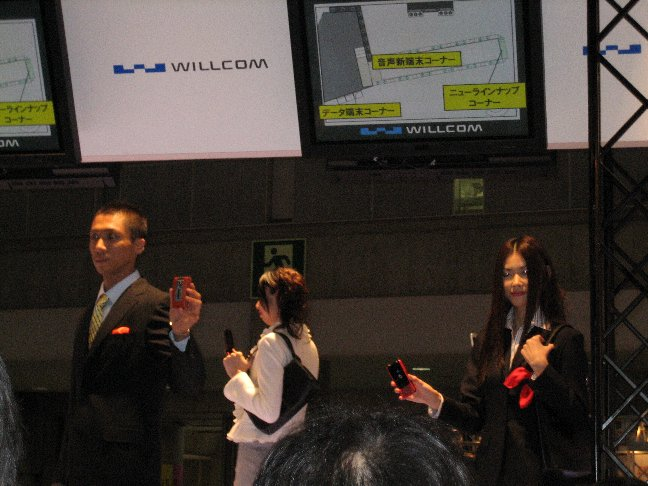

30分に一回こんな感じでデモショー（WX3xx系とW-ZERO3系の2種類） |
|  WILLCOMブースが一番賑わっていました、逆に混雑しすぎてゆっくり端末をいじれませんでしたが |
皆さんレポで色々並べてらっしゃるので敢えてNintendoDSにしました |
こうやってみると大きさの差は歴然って、遠近法まで使って詐欺商法みたいですね |
フリーズしてしまってリセットしてもらった後の初期画面です、液晶は大きくて見やすいです |
キーボードはプチプチしてて面白い押し心地でした、ちょっと使っていれば慣れるでしょう |
W-SIM TTは本当に小さかったです、通話性能は期待していなかったのですが非常にクリアでした |
上部のマイナス型を爪で回してW-SIMを取り出す感じです、差し込んだ後は数秒間認識中表示が出ます |
W-ZERO3は通話性能がややサーっと雑音が混じった感じで他の機種より聞き劣っていました |
いいショットが撮れました、安定感とサクサク感の向上に期待です |
WX310SAでJavaのパズルボブルをプレイ、PHSでのJavaは気分的にすごく新鮮でした |
WX310Kはややメール打ちの反応がもたつきました、かと思えば急に文字反応が良くなったりして謎でした |
Opera中のメール着信は京ぽんと同じ設計のようです、バックグラウンド受信があれば嬉しいのですが |
管理人：いわだら [ date18@gmail.com ]